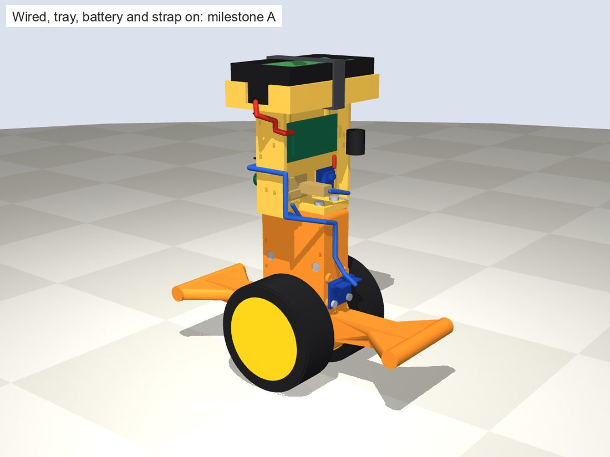
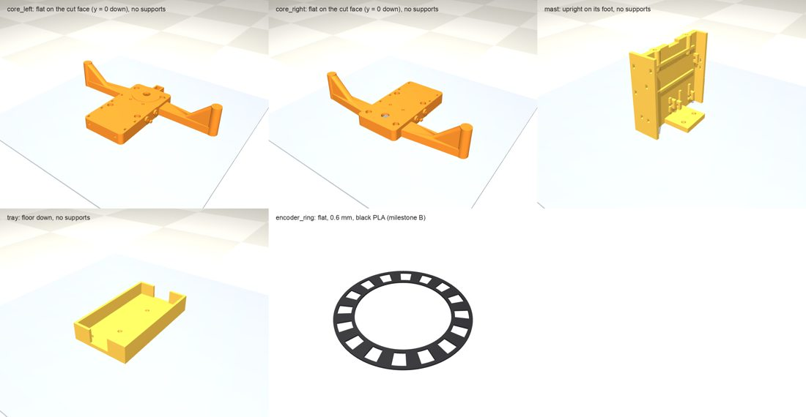
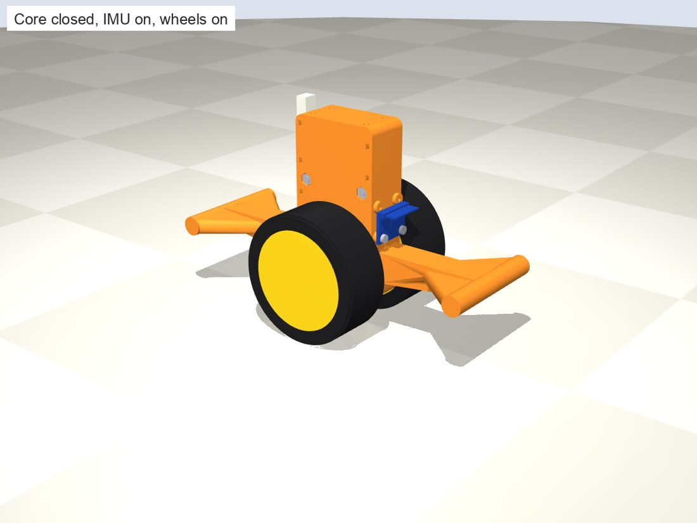
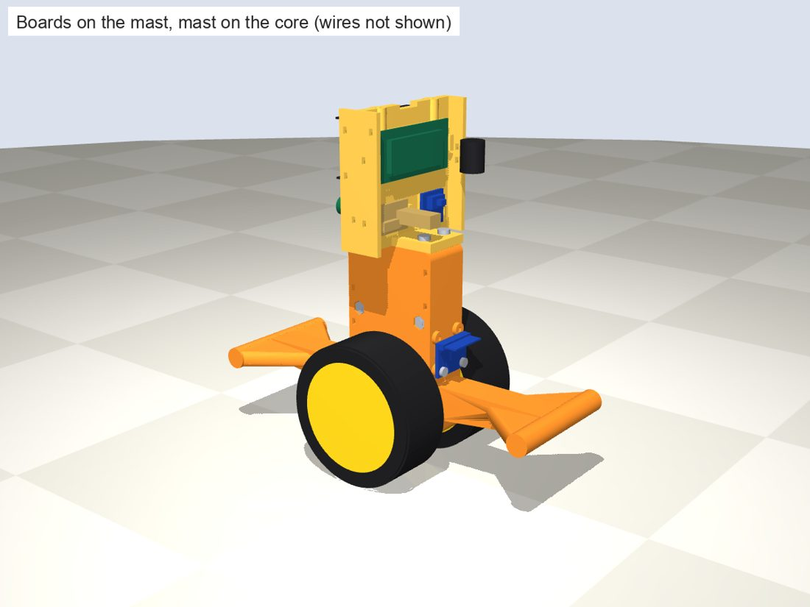
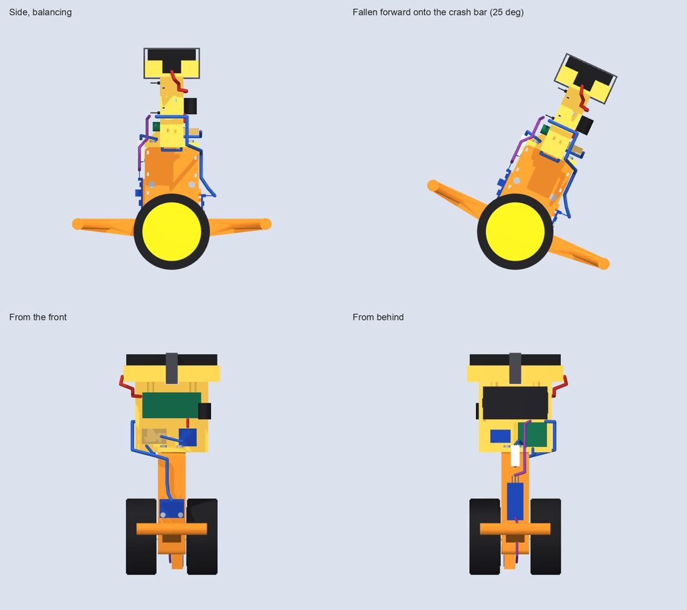
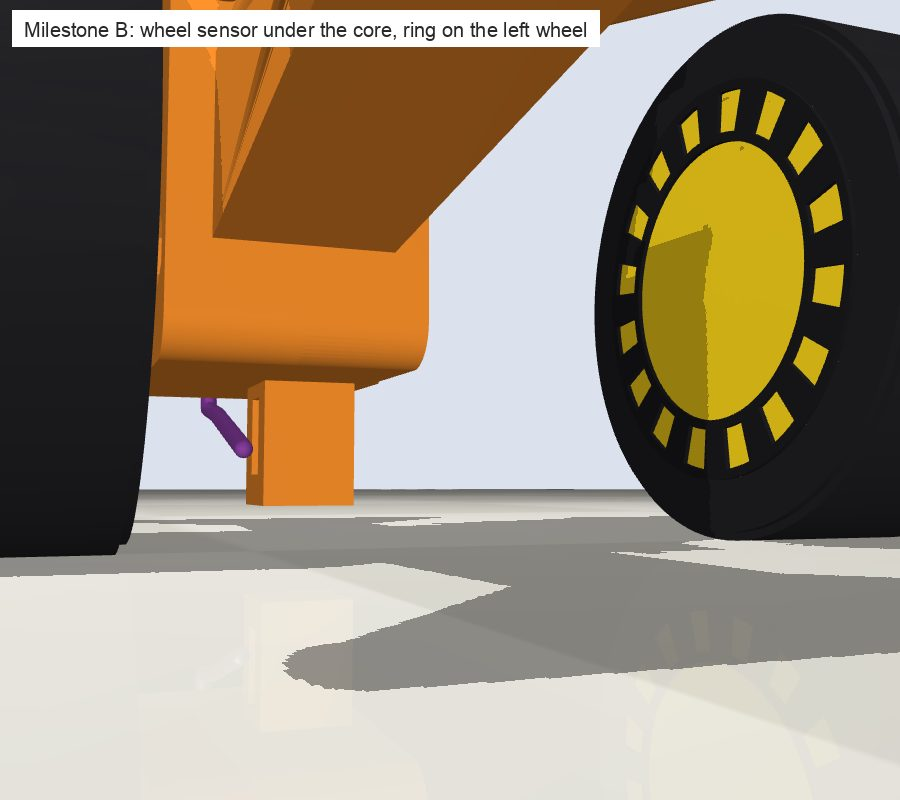

Stage 1: the bare-minimum balancer
Build this before the full Tailwhip. One TT motor, two wheels, an ESP32, an IMU and a PID loop, step by step from an empty desk to a robot that balances.
On this page
- Milestone A: balance on the IMU
- 1. Buy the parts
- 2. Measure, then print
- 3. Assemble the core and wheels
- 4. Build the boards onto the mast
- 5. Wire it
- 6. Power it up safely
- 7. Flash the firmware
- 8. Check the motor
- 9. First balance
- 10. Tune it and test it
- Milestone B: hold position
- 11. Buy, print and fit the sensor
- 12. Wire the sensor
- 13. Hold position
What it is. One dual-shaft TT gearmotor with a wheel on each end, two 18650 cells on top, an ESP32, an MPU-6050 and an MX1508 motor driver, held upright by a PID loop.
What it proves. That a TT motor is fast enough to keep a body upright. The full robot depends on that, so you find out here, with a smaller and cheaper robot.
- Parts
- about $34
- Prints
- Four in PLA
- Mass
- about 352 g
- Height
- 189 mm
- Stays up (sim)
- 258 of 300 robots
Two milestones, one build. Milestone A balances on the IMU alone. Milestone B adds one wheel speed sensor so it also holds its position. The sensor plugs in: unplugged, the robot runs exactly as in milestone A.
Stage 1 passes when the real robot stands for 60 s on a flat floor, recovers when released from 8 degrees,
and survives light pokes; and its measured wobble, motor speed and dead zone have been fed back into sim.py.
That is milestone A, on the IMU alone.
Each step has one thing to do and one check. Do not start the next step until the check passes.
Milestone A: balance on the IMU
1Buy the parts

Order everything on this list; the prices are pack prices, so check them. The cells must be a matched pair of genuine high-drain 18650s. Add a 8.4 V 1 A Li-ion charger if you have none: about $10.
| Part | Qty | About |
|---|---|---|
| Dual-shaft TT gearmotor 1:48 | 1 | $3.00 |
| 65 mm TT wheel | 2 | $4.00 |
| ESP32 DevKit (classic WROOM-32) | 1 | $7.00 |
| GY-521 MPU-6050 | 1 | $2.60 |
| MX1508 motor driver | 1 | $1.60 |
| Mini360 buck (set to 5.0 V) | 1 | $0.90 |
| 2S BMS with balancing | 1 | $1.60 |
| 2 x 18650 holder, series | 1 | $1.75 |
| 18650 cells | 2 | on hand |
| PTC fuse 3 A, power switch | 1 each | $1.30 |
| 470 uF 16 V, 100 nF (2), 100k (3), 33k | $0.95 | |
| JST-XH 2-pin pair | 2 | $1.60 |
| DC 5.5 x 2.1 mm jack on a pigtail | 1 | $0.70 |
| Perfboard scrap, header pins, four 20 cm jumpers | $1.35 | |
| M3 x 20 button head + nuts (4), M3 x 12 self-tap (4), M3 x 16 self-tap (2), M2.5 x 8 self-tap (2), 3 x 22 mm pins (2) | $2.00 | |
| Zip ties (12), 10 mm strap, wire | $2.00 | |
| PLA | 98 g | $1.60 |
| Total | about $34 | |
| Milestone B: TCRT5000 module, JST-XH 3-pin pair, 100k, 10 nF (2), four-core wire, three 20 cm jumpers | about $2.70 |
If it does not work: do not use that cell. See battery safety.
2Measure, then print

Measure your gearbox, wheels, boards and battery holder against this list; if one differs, change it in stage1.py and rerun it. Print core_left first, then the rest, each STL as it lies.
core_left.stl core_right.stl mast.stl tray.stl
| Core halves | Mast | Tray | |
|---|---|---|---|
| Material | PLA | PLA | PLA |
| Layer height | 0.2 mm | 0.2 mm | 0.2 mm |
| Walls | 4 (1.6 mm) | 4 | 3 |
| Top / bottom layers | 7 / 5 | 5 / 5 | 5 / 5 |
| Infill | 30 % gyroid | 30 % gyroid | 20 % gyroid |
| Cooling | 100 % after layer 3; bridge settings on | 100 % | 100 % |
core_left, the two steel pins go through it, and a wheel on the stub clears the cheek (the gap is 1.2 mm).If it does not work: see print settings (holes, bridges, first layer).
3Assemble the core and wheels

Solder the leads and capacitor C3 to the motor tabs and crimp on the K1 plug. Clamp the motor between the core halves with the steel pins and four bolts, tightened evenly. Screw the IMU to the front of the core, chip forward, X arrow up. Push a wheel onto each end of the shaft.
If it does not work: see assembly.
4Build the boards onto the mast

Build the junction board JB on scrap perfboard. Fit the ESP32, MX1508 and Mini360 to the back of the mast and the BMS, switch and JB to the front, each with one zip tie. Screw the mast to the core and the tray on top. No cells yet.
If it does not work: see board mounts.
5Wire it
Wire it from this drawing, one wire at a time, in its colours. Leave K1 (motor) and K2 (power) unplugged. The IMU takes four jumpers:
| GY-521 pin | ESP32 pin |
|---|---|
| VCC | 3V3 |
| GND | GND |
| SCL | GPIO 22 |
| SDA | GPIO 21 |

If it does not work: see the full wire list and the schematic.
6Power it up safely

Read battery safety first. Fit the cells, wire the BMS B-, then BM, then B+. Plug K2 and switch on, with the Mini360 output (W15, W16) still off the ESP32: it ships set to a random voltage that can kill one. Turn its pot until the output is right.
If it does not work: follow the power-up checklist, which has a reading for each connection.
7Flash the firmware
Switch off and push the remaining jumpers onto the ESP32 (power-up step 6). Plug in USB with the battery on only if your board passed the diode check. With arduino-cli and the esp32 core installed, from the top of the repository:
arduino-cli compile -b esp32:esp32:esp32 stage1/firmware/stage1_balance
arduino-cli upload -b esp32:esp32:esp32 -p /dev/cu.usbserial-XXXX stage1/firmware/stage1_balance
arduino-cli monitor -p /dev/cu.usbserial-XXXX -c baudrate=115200
MPU-6050 not found. Type show: held upright, pitch reads near 0; tilted forward, pitch goes positive.If it does not work: see IMU wiring and troubleshooting.
8Check the motor

Switch off, plug in K1, and stand the robot with its wheels off the ground. Type motor 0.3 1000, then motor -0.3 1000. If the tyre top moves backward on the first, type dir -1, then save.
Run motor 1 3000, count the wheel turns and note the no-load speed for the simulator.
If it does not work: see troubleshooting and the MX1508.
9First balance
On a flat floor, hold it upright and still while you switch on: the LED goes solid when the gyro is calibrated. Keep holding it within 5 degrees of upright for 500 ms and the controller takes over. Past 22 degrees it lets go and waits.
If it does not work: if it creeps away, falls slowly or shakes, go on to the next step: it sets the trim and the gains.
10Tune it and test it

Tune: creeps one way, change trim; falls over slowly, raise kp; shakes hard, lower kd; runs away,
raise kv. save when it stands. Gains apply to the set picked with edit imu|ir; wheel off tunes milestone A
with the sensor still plugged in.
Then log a run and compare it with the plot above:
stream 1, log 20 s, and compare the wobble with out/plot_nominal.png.
The simulator expects a wobble of about 1 degree at 4 Hz. It has no wheel sensor yet, so it wanders: the simulator says about 50 cm in 20 s.
If it does not work: see the tuning notes and the simulation.
Milestone B: hold position
One TCRT5000 IR sensor reads a printed ring on the inside of the left wheel, so the firmware knows how far the robot has rolled and can bring it back. Start only after milestone A passes. The ring has 16 windows, and the sensor's output goes to ESP32 GPIO 34.
11Buy, print and fit the sensor

| Ref | Part | Qty | About | Notes |
|---|---|---|---|---|
| U7, U8 | TCRT5000 IR reflective module, LM393, digital DO, blue trimmer, 3.3-5 V | 1 | $0.80 (10-pack $7.99, published BOM) | U8 is its own sensor, moved to the clip |
| K3 | JST-XH 3-pin wire-to-wire pair (pre-crimped plug and socket leads) | 1 | ~$0.80 [E] | The sensor plug |
| R5 | 100 kΩ 1/4 W | 1 | (resistor kit) | Pull-down, at K3 |
| C4, C5 | 10 nF ceramic, 50 V | 2 | ~$0.10 each [E] | C4 at K3, C5 on the module's C-E pads |
| Four-core wire, 28-30 AWG, 10 cm (or four strands of ribbon cable) | 1 | ~$0.20 [E] | Sensor pigtail W34-W37 | |
| Dupont F-F jumpers, 20 cm | 3 | ~$0.15 each [E] | W28, W29, W30; two become Y-leads | |
| Male header pins | 2 | (from the 40-pin strip) | The Y-leads' branch pins | |
| 1.5 mm heat-shrink, 26 AWG wire | Leg joints, Y splices, R5/C4 |
Print the ring in matte black PLA. The TCRT5000 comes off its module board and sits in the clip under the core on a short four-wire pigtail, 2.5 mm from the ring; the board goes on the back of the core. The ring is glued to the inside face of the left wheel. The fitting steps have the order; the core does not come apart.
If it does not work: see milestone B, mechanical.
12Wire the sensor
Make the K3 lead (two Y-leads and R5, C4 at the plug) off the robot and plug it in as in fitting it. VCC goes to 3V3, never 5V:
| Connection | From | To | Wire |
|---|---|---|---|
| 3V3 | ESP32 3V3 (row A, 19th pin from the USB end), Y-lead shared with the IMU's W24 | K3 pin 1, then module VCC | W28, W31 |
| GND | ESP32 GND (row A, 6th pin from the USB end), Y-lead shared with W16 | K3 pin 2, then module GND | W29, W32 |
| D0 | ESP32 IO34 (D34, GPIO34; row A, 15th pin from the USB end) | K3 pin 3, then module D0 (printed DO on some boards) | W30, W33 |
| A0 (AO) | not connected | ||
| IR LED anode | module sensor pad A | U8 leg A | W34 (red) |
| IR LED cathode | module sensor pad K | U8 leg K | W35 (black) |
| Detector collector | module sensor pad C | U8 leg C | W36 (white) |
| Detector emitter | module sensor pad E | U8 leg E | W37 (blue) |
Then set the trimmer so the module's D0 LED follows the windows.
If it does not work: see power-up, milestone B and troubleshooting.
13Hold position
Balance it as in milestone A. With the sensor plugged in, the firmware detects it and holds position; unplugged, it behaves as in milestone A.
Milestone B passes when, with the wheel sensor plugged in, the robot still does all of the above and stays within about 30 cm of where it started over 60 s.
If it does not work: see the firmware and tuning notes and the simulation.